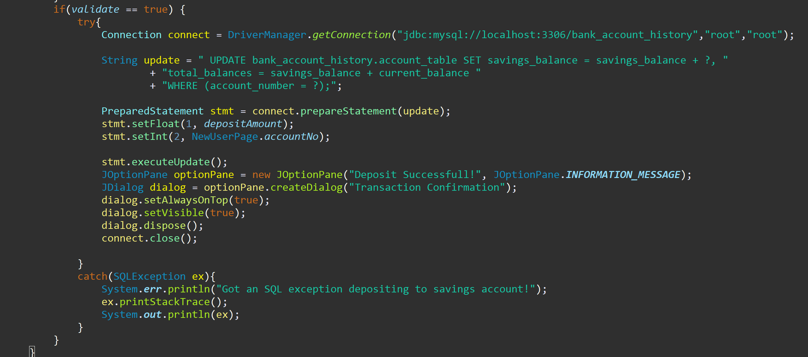

Banking Application
I chose this project to build on what I had learned while doing the OCA course.
Completing that course provided me with great foundational knowledge of Java so, I wanted to push on and learn something a
little more complicated.
There were a few parts needed for this project. I needed a database where I could store the data and, a way to connect
my java program to that database. I decided on using MySQL for the database with JDBC as the connector. Once I had the
environment set up, I began by building the GUI. Looking back on this after now, some time, I can see many improvements that
could be made but here are some screenshots:

As seen above, the first option the user has is to either login or, select new user to create a new account. For demonstration purposes, I have cleared the database and entered test data so we can see the program in action. If the user had chosen login, they would have been logged in and taken to the transactions page. Here, when the user creates a new account, they are also logged in and taken to the transactions page.
In the screenshot on the left above, the user can perform any action they want to perform from the same window. They also have the option to view their account details, as seen in the screenshot on the right. The account number in the statement is randomly generated for each new customer and, is their primary key within the database. The other thing to highlight is, when the user creates a new account, they also must create a username and password. I have implemented a second table in the database that holds the login details separately, with the password encrypted using the SHA256 hashing algorithm, for security and GDPR. Seen in the screenshot below.

As this project was more complicated, I had to find a lot of answers along the way which led to learning a lot more than I had expected. In this case, I thought I would learn “how” to do “what” I wanted but, I learned “why” to do it a certain way especially when handling sensitive user data. This made the whole project much more enjoyable. Finally, I will provide a snippet of code used in the transactions page of the application for depositing to the savings account:
The code above deposits the users input amount to their savings account. This piece of code, as with all other transactions,
performs checks before it runs. This code is standard enough but the “withdraw” and “transfer” functions check the users balance and
notifies the user if there are insufficient funds for the transaction being performed. There are also checks on fields that are
required, they must not be empty, and the data type entered must match what input is expected. The connection to the database is
opened and closed only when needed.
In summation, there are some changes that could be made to improve the application overall. I could have put all the windows shown
above into a single GUI. This would remove switching between windows. There is also some code remaining from when I was testing the
functionality that should be removed, and comments should be added to make reading the code more intuitive.
With all that said, this was a very pleasing project to work on. I began thinking I would learn some specific things but ended up
learning a lot more which has also changed how I think about creating solutions from the beginning. In this use case, how user data
should be handled respectfully and with the end users' best interests at the forefront.